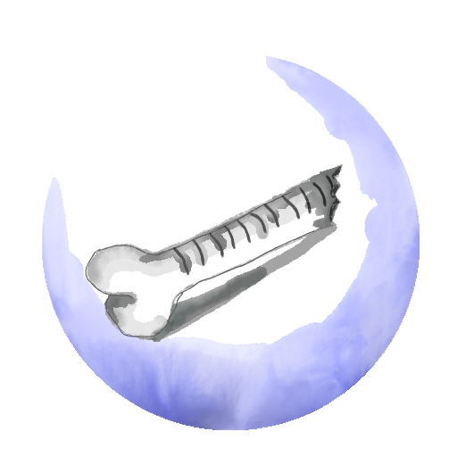
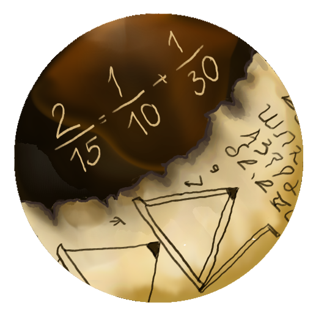
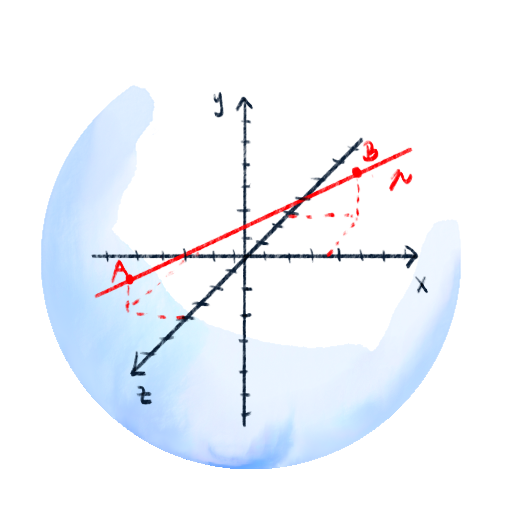

Vývoj matematiky

20 000 pr. n. l.
kosť Ishango
Kosť menom Ishango bola objavená v Kongu, v oblasti Ishango. Odtiaľ je jej meno. Pôvodne patrila paviánovi, ale naši predkovia si ju požičali, aby do nej spravili zárezy. Na kosti je 168 zárezov rozdelených do troch riadkov. Ich presný počet sa nevie, pretože kosť je zlomená. Jedna z hypotéz hovorí o tom, že ľudia na ňu vyrezali akýsi kalendár. Druhá hypotéza hovorí o poznaní prvočísel, násobení a dokonca delení. To je však málo pravdepodobné, lebo tieto veci ľudia spoznali oveľa neskôr. [1]

1650 pr. n. l.
Rhind papyrus
Papyrus sa našiel v Egypte a zrejme pochádza zo Strednej ríše. Nachádza sa na ňom 84 rôznych úloh. Medzi nimi násobenie, delenie, geometria alebo obsahy a objemy. Zaujímavým problémom bolo pre nich delenie dvojky. Vedeli deliť číslo 1 a tak delenie dvojky zapisovali ako súčet delení jednotky. Príklad s 2/15 je na obrázku. [2] [3]

1637
Analytická geometria
Renesancia nechala po sebe niekoľko problémov, na ktoré dovtedajšia matematika nestačila. Napríklad potrebovali zistiť údaje z funkcie tvorenej krivkou. Dostať ich nemohli, pretože funkciu nedokázali ani poriadne nakresliť. Našťastie sa francúz René Descartes narodil ako chorľavé dieťa, a tak mal veľa času študovať. V roku 1637 vychádza jeho dielo La Géometrie. Prišiel na nový spôsob abstrakcie, ktorá prevádza geometrické problémy na algebraické. To znamená, že tam, kde nestačí kreslenie, prichádza matematika. V jeho diele predstavil spôsob, ako zapísať geometrické prvky pomocou matematiky, a tak umožnil spočítať aj veci, ktoré sa nakresliť nedajú (napr. 4 a viac rozmerný priestor. Ver tomu, že dnes sa počíta s veľa rozmernými priestormi všade).
Zdroje
[1] RUDMAN, P. S.: How Mathematics Happened: The First 50,000 Years. Prometheus Books, 2007. 63 s. ISBN 978-1-59102-477-4.
[2] The British Museum. Papyrus. https://www.britishmuseum.org/collection/object/Y_EA10058
[3] Gardner, Milo. "Rhind Papyrus." From MathWorld--A Wolfram Web Resource, created by Eric W. Weisstein. https://mathworld.wolfram.com/RhindPapyrus.html